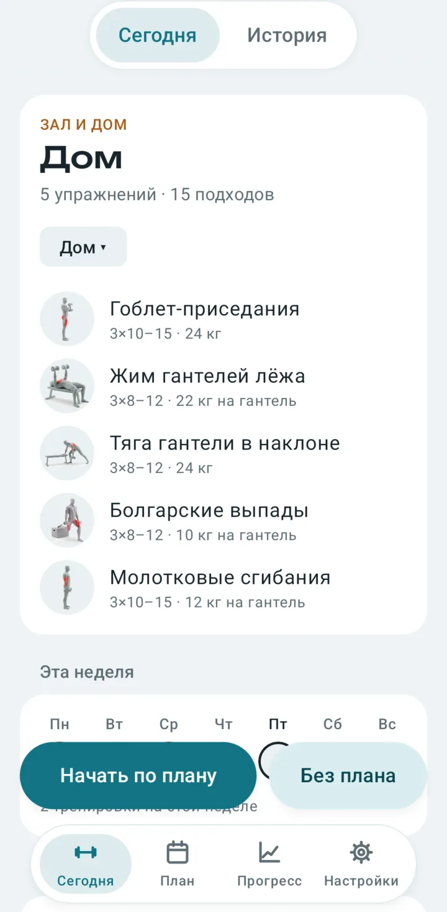
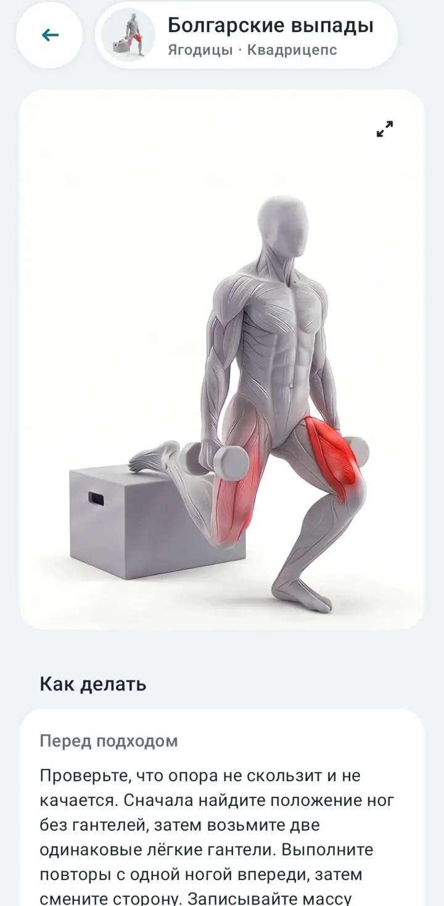
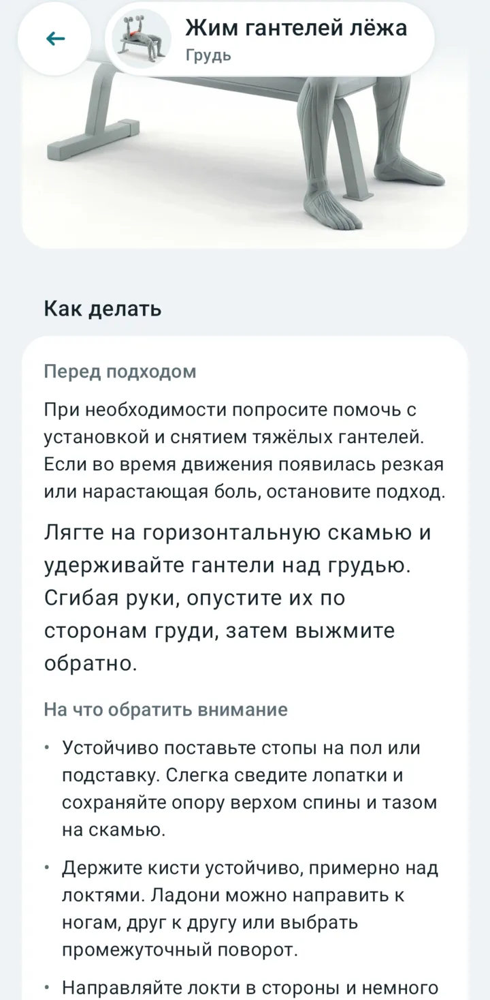
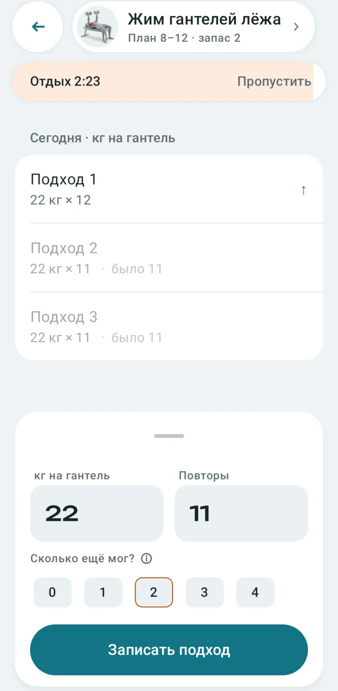
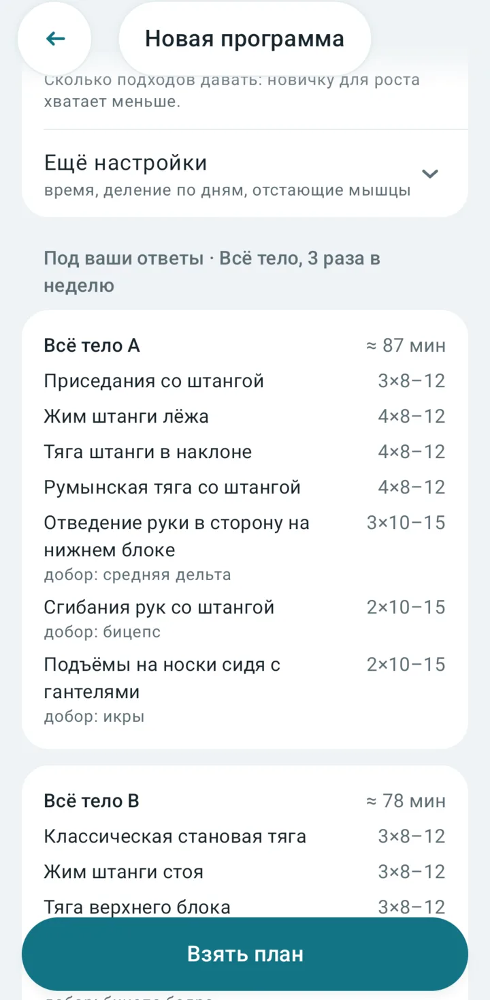
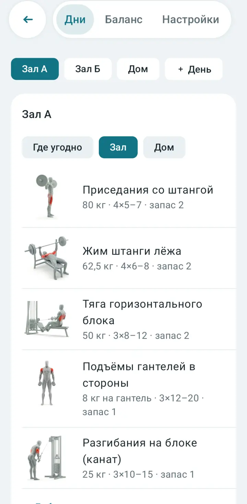
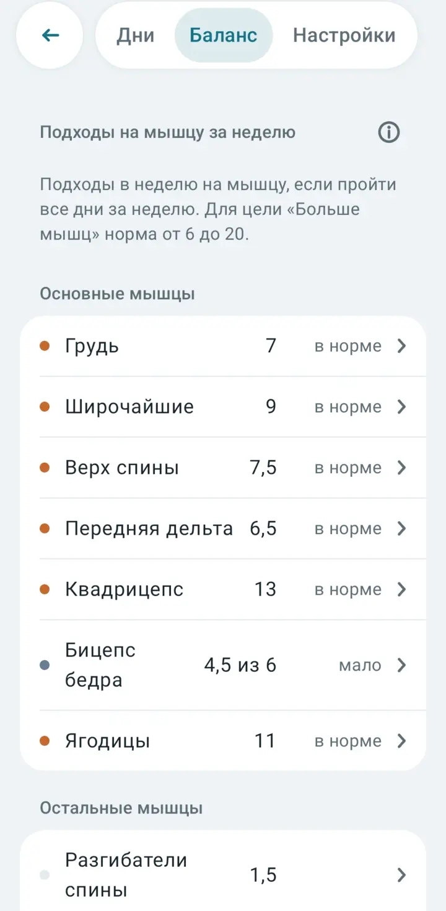
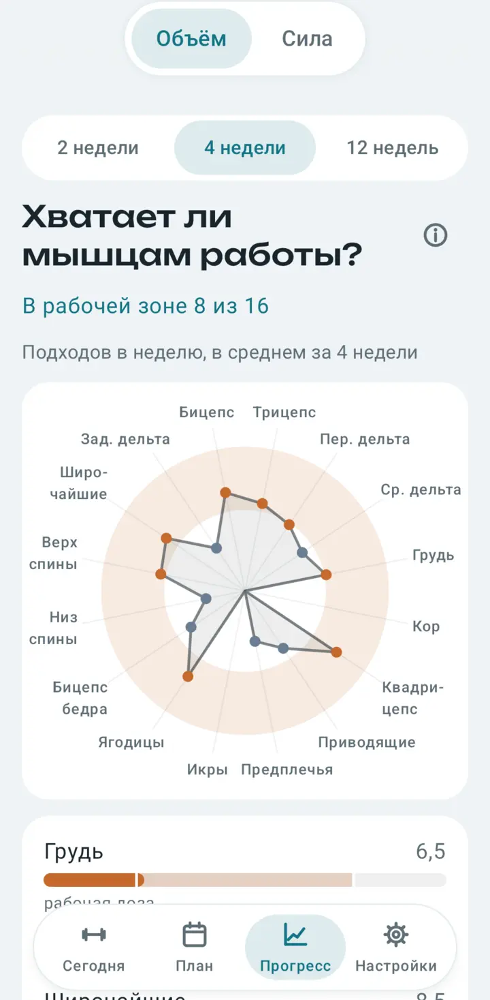
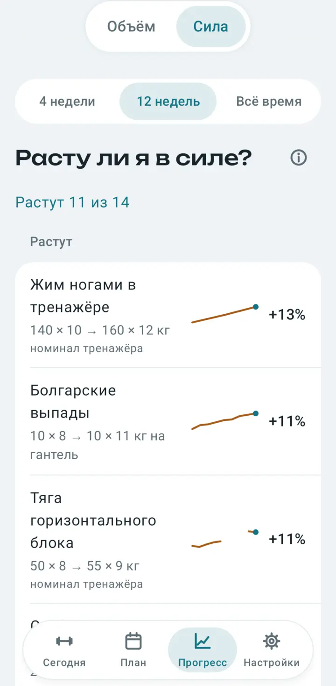
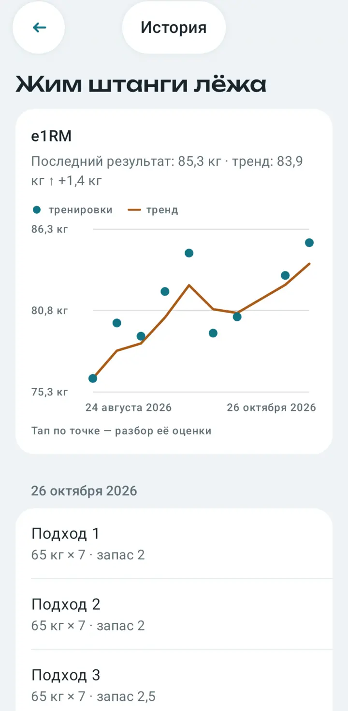

Train by a plan and see what grows
Pechora builds a plan for the equipment you have, shows how to perform every exercise, and gives honest answers to two questions: are your muscles getting enough work, and are you getting stronger.
- Free, no ads
- No account needed
- Your diary stays on your phone
- Gym and home in one plan


See how to do it at a glance
Exercises come with a short movement video that highlights the working muscles, plus cues: what to check before a set and what to watch during it.
- The video opens from the exercise page and from a workout
- Practical cues without myths or big promises
- Search by muscle and equipment

Log a set with one hand
Weight and reps are prefilled from last time: adjust them and mark how many more reps you had left. The rest timer starts by itself.
- Last time's numbers are shown next to every set
- Dumbbells are logged per dumbbell, resistance bands by the band itself
- Missing a piece of equipment? A replacement is picked from what you have

A plan for your gym and your home
Answer a few questions: how many times a week, what matters more and where you train. Pechora builds a plan from the equipment you have. Then edit it any way you like.
- Each day has its place: a barbell at the gym, dumbbells at home
- Double progression tells you when to add weight
- Or skip the plan and just log your sets


See what each muscle gets before you train
Right in the program editor Pechora counts how many weekly sets each muscle gets if you complete every day. Too little or too much shows up at once, and tapping a muscle shows which exercises make up the number.

Two simple questions, honest answers
Instead of a wall of charts, progress answers the questions people keep a training log for. Every number has an “i” icon that explains how it was calculated and why you can trust it.



Your diary stays with you
Pechora works without an account and without a server of ours. The diary is stored on your device, all calculations run on it, and you can export the diary to a file and restore it from a backup.
Privacy PolicyOptional Google Drive backup
If you choose to connect Google Drive, Pechora saves a backup copy of your diary as a JSON file to your own Drive. It uses the drive.file scope, so it can only access files it created, and your email address only to show which account is connected.
Google user data is used for nothing else: it is not shared, not used for ads and not used to train AI models. You can turn backups off in the app's settings at any time.
Questions?
Answers about saving and restoring your diary, and how to reach the developer.